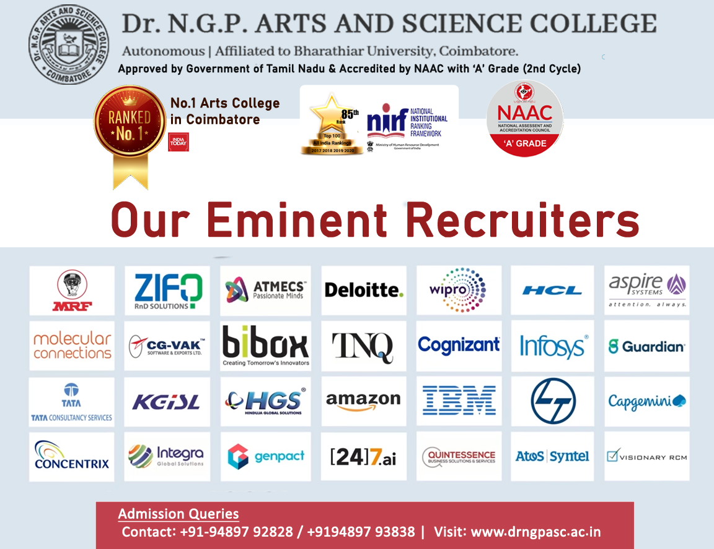

The Placement Cell plays a major role in paving the way for success in a student's career. With a consistent track record of achieving a maximum number of placed students, the department strives to ensure that no students are left out from achieving their dream job. Our training programs are focused towards a holistic development of building students expertise in Technical, Aptitude as well as Soft skills. Our unique skill based assessment evaluates students based on their performance and knowledge levels. The main objective of the Cell is to bridge the gap between the stringent competition in the industry and with the existing talent available in the college. The Placement Cells motto is to make each and every student employable!
To enhance the employability of our students and impart the necessary skills and training to meet the expectation of the industry.
Activities facilitates an overall development of the students grooming by providing a range of inputs like
The prime objective of the cell is to provide students with the latest training and certifications in line with the Corporate and Industries. The cell draws out competencies of the students and enables them to strive for better job opportunities.
Many programs have been organized this year to develop student’s skills such as:
With a dedicated team, the cell constantly works and trains students towards achieving their goals and fulfilling their dreams. Training Young Mentors is a unique feature of Dr NGP Arts and Science College in facilitating group training sessions for its Placement representatives. These representatives are given special training in analysing tasks and designing training activities to further mentor their fellow mates.
About 75 companies recruited students for various positions. Apart from the below, the Placement Cell continuously organizes Career Oriented Programs by helping students to overcome hurdles in searching for jobs. The following reputed companies which visited our college for recruitment for the academic year.
